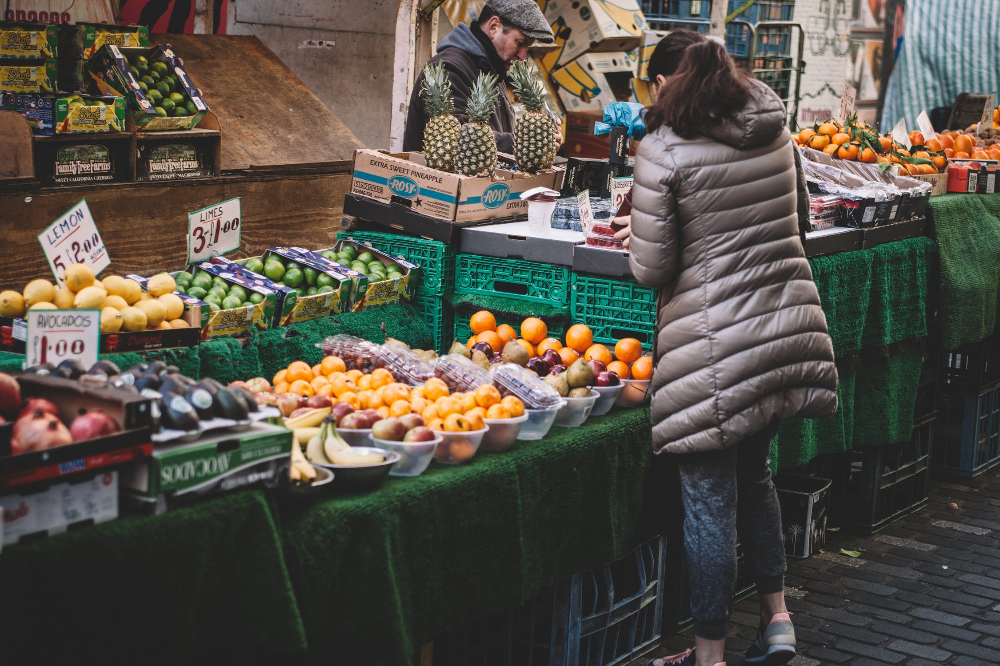

As you get closer to the farmer's market, you start to realize how crowded it is. This section of town is more populated than you're used to. The smell of food is too appetizing to pass up though, and when you're lost in the smell, someone almost steps on your tail. There are two places you can run off to, the pie stand with a tall woman with nice eyes, or the egg stand where a large bearded man enthusiatically talks about eggs. Which stand do you choose?